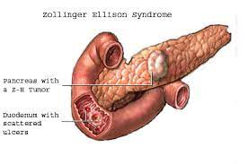

Gastrinoma

SYMPTOMS:
- stomach pain
-
diarrhea
-
indigestion or heartburn
-
bloating
-
vomiting
-
nausea
-
bleeding
-
weight loss
-
poor appetite
CAUSES
- Gastrinomas are the uncontrolled division of cells that produce gastrin. The exact cause of this condition is unknown, although there may be a genetic link.
-
Gastrinomas can develop sporadically for unknown reasons. But approximately 25 to 30 percent of gastrinomas are associated with an inherited genetic disorder called multiple endocrine neoplasia type 1 (MEN1), says the National Institute of Diabetes and Digestive and Kidney Diseases (NIDDKD)Trusted Source.
-
This hereditary disorder is characterized by the development of tumors in hormone-producing glands. Other symptoms of MEN1 may include higher hormone levels, kidney stones, diabetes, muscle weakness, and fractures.
DIAGNOSIS
- Secretin test/fasting serum gastrin-
This test diagnoses problems with the pancreas by measuring its ability to respond to the hormone secretin. During this test, your doctor injects the hormone into your bloodstream, and then monitors your body’s response. Your doctor checks to see whether your gastrin level increases after the injection.
-
Imaging tests-
Your doctor may order a CT scan or MRI to determine the location of the tumor and assess whether the tumor has spread to other organs. Gastrinoma tumors or lesions can be small, so these imaging tests may not produce an image. In this case, your doctor may complete an endoscopic ultrasound. For this procedure, your doctor inserts a tube with an attached camera down your throat to look for tumors in your stomach or small intestines.
-
Biopsy-
If your doctor discovers a tumor, the next step is a biopsy. Your doctor removes a sample from the tumor, and then sends this sample to a lab for testing.
-
Gastric pH test-
This test uses an endoscopy to assess the amount of gastric acid in your stomach. Higher levels of both gastrin and stomach acid may indicate a gastrinoma.
TREATMENT
- removal of the entire tumor
-
removal of the head of the pancreas or the tail of the pancreas
-
small bowel resection (removal of part of the small bowel and the tumor)
-
surgery to remove tumors that have spread to other organs, such as the lymph nodes or liver.